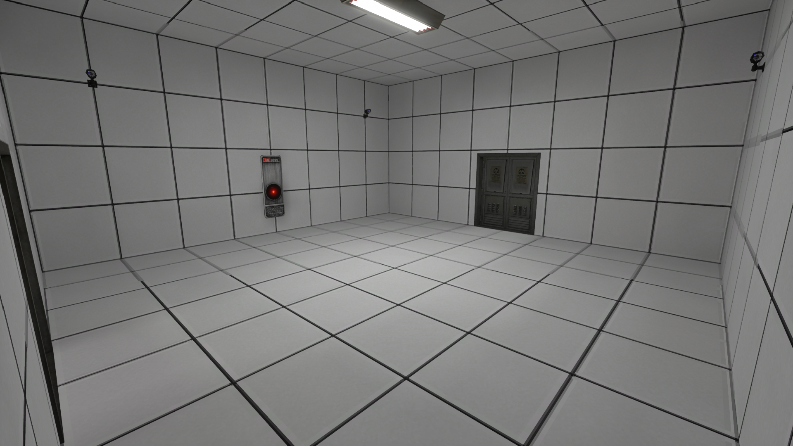
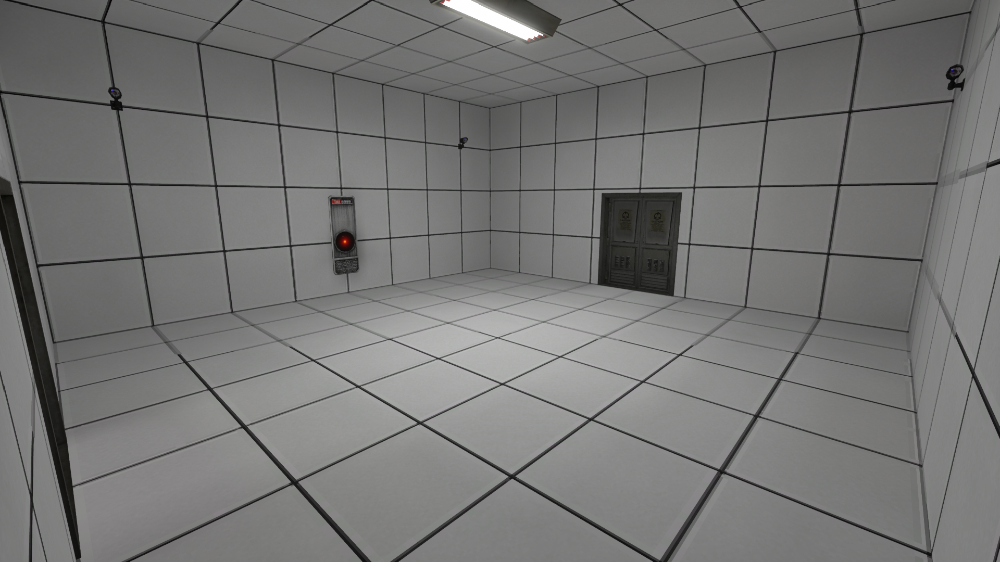

Other Worlds
Description:
Within the game files are several worlds that don't classify as either an anomaly or as a test level. Some of these you can already get access to. While some will require you to manually load it up.
untitled_-1
Old gameplay test map. It features 2 terminals, 6 drives, 8 satellites all named "Barbel", and a prototype ATV, which can't be driven due to broken code.
untitled_8
The old tutorial. All assets are intact, and it can be played through until the end. The player was originally going to learn about vehicles and the power block, but those assets have been moved out of bounds. It ended by the player typing "cake" into the console, which would then produce red text saying "is a lie" and then booting the player to the menu.
The first room is a relatively empty room with a speaker prop and a burger. The second room is simply giant squared pillar. The third room is going to be a halfwall with a door blocking your way, this one also has a couple boxes with a burger on one of them. The fourth room consists of a hole above and a couple gas cans. The fifth room is a dark maze like room with no lights. The sixth room has a metal desk and a battery. The seventh room has a blue wall and a hole that leads down to the void below. The eighth room is simply a corner room with nothing.
The ninth room has the Coordinate terminal tutorial. The tenth room has the Filtering terminal tutorial. The eleventh room has the Playback terminal tutorial. The twelveth room has the Processing terminal tutorial. The thirteenth room is a long hallway with one gas can. The fourteenth room is the servers tutorial. The fifteenth room is the command console tutorial. The sixteenth room is the exact same as fifteenth room.

tutorial
An updated version of the old tutorial, most of the rooms and assets from the old tutorial remain the same except with a few changes and a couple new updates. Tai-9999 prop will replace all the speaker props and there are blue lighted cameras, that follow you regardless of location, in every room.
The first room will have scraps of paper, a drive box, chairs, metal tables, and other random miscellanous items. Also in the room are blue cameras that follow you where ever you are. Behind you is an elevator. The second room is simply a Tai-9999 in a giant pillar. The third room is going to be a dark little maze-like hallway that you will have to navigate around, it has a mannequin. The fourth room consists of holes on all sides of the room and has a few gas cans. The fifth room will be a corner rectangular room with an orange transparent wall and a few gas cans. The sixth room has the Coordinate terminal tutorial.
 


The seventh room has the Filtering and Playback terminal tutorial. The eighth room has the Processing terminal tutorial. The ninth room has the servers tutorial. The tenth room has the command console tutorial. The eleventh room has the drive box and delivery tutorial. The twelveth room has laptop tutorial.
The thirteenth room consists of a room filled with the blue lighted cameras. Afterwards there is a long dark hallway that you will have to pass through. Once you've entered through the hallway you will have reached the final room which is simply a pedestrial with a cake.
tutorial2
Was the tutorial for the main game, features the tutorial on interacting with objects and items, as well as moving around, using the Playback, Denoising, Coordinate, and Filtering terminal, using the command console and repairing servers, and how to send processed drives. Although one strange feature is the Jellyfish that randomly fly around the map and phase through, this is a bug.
tutorial3
The current tutorial, it has a ton of hidden easter eggs and secrets. The map, lighting, textures, and build is very similar to that of untitled_61.
There are tons of rooms used for the tutorial which include and feature general controls, general interactivity, Playback, Denoising, Coordinate, and Filtering terminal tutorials, basics of the command console and server repairment, basics of power transformers, and the end of the level. The list here will also all the hallways and corridors.
In the room with the gas cans and beers if you were to access on the top platform either by jumping or glitching you can get access to a little hallway with a Spider Argemia in it. You can also use this platform to throw a gas can at the radioactive capsule, thats located inside the little window above, to grab it.
In the room with the all the terminals tutorials there is a little keyhole behind one of the pillars, there is nothing you can do with this keyhole currently as there is a white cube obstructing its insides. However also in the same chamber there used to be a vent located on the top, to break it you would throw objects at it for a while until it crumbles. If you were to manage to climb inside you will find a popup. But this has been blocked off. There is also a radioactive capsule on top of the blue slide, you just throw some items to knock it off. And in one of the white blocks of light (as marked by the donut tube), you can go walk through and after navigating around the white void, you can find a white door.
Inside the server room tutorial and above the servers is a star and circle drawing, using a crowbar or any other tool you can break down the hidden block thats behind the star to access a new part of the tutorial.

Once inside you will climb up a ladder, after which you will encounter two fake vents that don't do anything but on the third one it will collapse beneath your feet to reveal a large slanted chamber. However if you were to skip this third vent you will end up in another dead end.
Inside the large slanted chamber you will have presumably fallen down and into a much larger part of the entire structure.
Here there are side chambers with stairs that go up and down and stays the same on both right and left sides. In the main chamber it has bridges and theres a layer of water on the bottom. There is also a bunch of rocks on the right side.
There are 4 stone blocks, each shaped differently. Some of them will require you to throw rocks in order to access. There are 4 pedestrials on each corner of the main chamber, put down the same shaped stone on it to activate a jumping platform on the final pillar. Relative to where you are facing so if you are facing towards the vent, the triangle stone goes back right, square stone goes back left, pentagon stone goes front left, and the hexagon stone goes front right.

Once finished you can jump and climb until you make your way to the vent to break it. Once inside you will climb up a really tall ladder, then you will access a small room with a vent that collapses upon falling into.
From there you will have accessed the final room or dead end. It consists of a dry dark room. It has fountains, pipes, and a radioactive capsule behind one of the pipes. If you were to break into the blue slides that are blocked off from the metal grate you used to see piles of flesh and blood but its removed.
The room itself used to be bloodied out with water and stains everywhere, but this too has been removed.
In the room with the Transformer, there is an orange key on top of the middle bracket that extends across the room, to grab it you can use any item of choice and just slide it around until you get the key out. The key can be later used in the other keyhole which is found in the beginning of the level. After hitting e or interacting with the moving block you can stick the the key in and turn it.
After turning the key a door will unlock, that being the little grate that was blocking the water ventilage earlier, now inside the grate you will have access to a little underwater maze.
Afterwards you can access another room but this one has another vent for you to break open, once you do, you can access the second set of ventilation systems.
Inside the second set you used to find a corpse on the left branch of the maze but its removed. And on the right of the set you can find another popup on the right. However if you were to ignore all of these and go straight up you will access a new room.

Inside this new room will be a small chamber that you'll have to jump onto to discover a set of doors that can be unlocked using the code 7261. Once through you will access a bright chamber and a dark staircase that leads to the bottom.
Once at the bottom you will navigate around a dark corridor into a waterlogged room with little fountains and lights. Here is you will need to have acquired all 3 radioactive capsules and place them inside the little holes to unlock a little underwater pipeline.
Once out of this underwater pipeline, you will be in the last room before you fall into the second hole which will warp you into pipepipe world.
Also in the tutorial3 world is a little jail cell that can only be accessed when switching from a any world to the tutorial3 world and not by playing the tutorial mode. Inside this jail cell consists of 4 small rooms and a little hall at which at each end a Spider Argemia spawns and chases the player. Out of the 4 rooms two are completely identical, one has 3 argemia plushies with one of them being shirtless, and the last room has an Argemia Plush but untextured.
One last section that can be found in this world is a fountain hallway chamber, you can access it by hitting the home button or numpad "." button. You will start in a small chamber with a popup, then entering through a set of doors you will have a long and tall hallway with fountains on each side, there is a little shrine that when breaking through the metal grate you will have access to another Spider Argemia. There used to be one dead corpse alongside a broken fountain, however in the newer versions the corpse has been removed and replaced with a bloodied water.
pipepipe
Continuation of the tutorial3 secrets. This world has similar ambience, lighting, textures, terrain, and build as tutorial3.
You first spawn at the top of a hole and fall into another underwater pipeline maze. Once out, you will be faced with a dark maze that you'll need to navigate through.
There are two maze solutions, the main one is: left, right, right, left, left, straight, right, straight, right, left, right, straight, left, right, right, left, right, left, straight, left, left, right, right, left, right, left, right, left, with each turn you move foward and each straight you pass one line of corridors.
To access the second but not main solution to the maze you must go from the main maze solution, turn around and go: right, left, left, straight, right, straight, left, straight, right, left, straight, straight, left. Once you have found the entrance you will be greeted with a ghetto like area with a tree in the middle.
Once at the end of the main maze solution, you will enter into a dark arched chamber with a ladder at one side.
Once having climbed the ladder, you will encounter a super large chamber with pipes and pillars running through all over the place. There is a second level in which to access you must parkour your way up the pipes and climb. But also in this room you can go through one of the white lights as marked by the workbench I placed here, from there you keep walking until you fall into a hole of water and a door at the end.
When you have reached the second level, you will encounter a double chamber with little swimming pools and an unreachable ladder. To reach this ladder, you hit the button behind one of the pillars. There is also a breakable wall that leads to a vent. That vent eventually leads to a room with a pile of blood, a podium with a star and a plush which is a reference to a youtuber, Jolly Wangcore who spent hours in the tutorial instead of the main game.
After climbing two sets of ladders and ledges you will encounter another poolroom that has slanted arches and a pool on one side. Climbing on the very end ledge you will fall down a hole.
The hole will lead you into a circular chamber with 7 levels, on the second level there is a corridor.
Once through you will find the first jail cell with bars that you can pull apart and walk onto a ledge.
From there you can break through some vents to get access to the second jail cell.
Eventually you'll make your way over another super large chamber but with deep pools of water, with tons of doorways on one side.
Going to the one that is on the same level as the player and 3 doorways ahead of you will have a vent that when went through, will lead you to the final level.